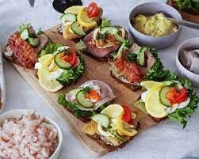

Danish Cuisine
Denmark's rich culinary heritage and its focus on fresh, local ingredients. Danish cuisine combines traditional recipes with modern gastronomic trends, resulting in a diverse and innovative food culture.
The Danish diet is known for its emphasis on high-quality ingredients such as fish, meat, vegetables, and dairy products. The country's geographical location and proximity to the sea contribute to the popularity of seafood, particularly herring and salmon, which are often enjoyed in various preparations.
Smørrebrød, an open-faced sandwich, is a prominent feature of Danish cuisine. These sandwiches consist of a slice of rye bread topped with various toppings like pickled herring, smoked salmon, liver pâté, or cheese. Smørrebrød can be customized to individual preferences and are often enjoyed for lunch or as a light meal.

Denmark is famous for its dairy products, including butter and cheese. Danish butter is known for its high-fat content and rich flavor, making it a staple ingredient in many Danish dishes. Danish blue cheese, known as Danablu, is a popular export and has a distinct creamy taste.
Another notable aspect of Danish cuisine is its focus on foraging and the use of wild ingredients. Denmark's forests and countryside offer a variety of edible plants, mushrooms, and berries that are incorporated into dishes, adding unique flavors to the cuisine.
Some traditional Danish dishes, such as frikadeller (meatballs), flæskesteg (roast pork), and stegt flæsk med persillesovs (fried pork belly with parsley sauce). These dishes are often enjoyed during festive occasions or as part of a traditional Danish meal.
Many Danish chefs and restaurants prioritize locally sourced and organic ingredients, promoting a more environmentally friendly approach to cooking.
Overall, Danish cuisine combines traditional flavors with modern culinary techniques, creating a diverse and exciting food culture that reflects Denmark's rich heritage and focus on quality ingredients.